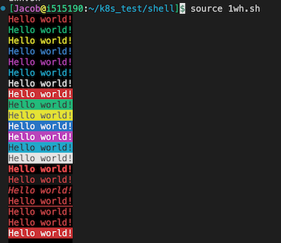
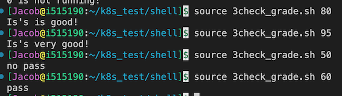
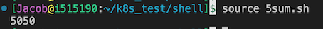
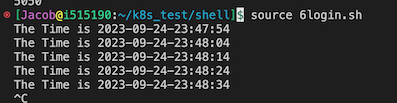
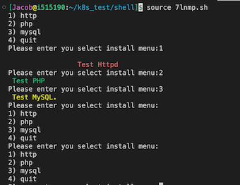

Linux shell 脚本详解学习 2023
Shell 通过提示您输入，向操作系统解释该输入，然后处理来自操作系统的任何结果输出，简单来说Shell就是一个用户跟操作系统之间的一个命令解释器。
常见的shell 有哪些
Bourne Shell（/usr/bin/sh或/bin/sh）Bourne Again Shell（/bin/bash）C Shell（/usr/bin/csh）K Shell（/usr/bin/ksh）Shell for Root（/sbin/sh）
1.2 shell 编程注意事项
- shell 编程有哪些注意事项
- shell 命名：Shell 脚本名称命名一般为英文、大写、小写，后缀以. sh 结尾
- 不能使用特殊符号、空格
- 见闻之意，名称要写的一眼可以看出功能
- shell 编程 首行需要
#!/bin/bash开头 - shell 脚本 变量 不能以 数字、特殊符号开头，可以使用下划线
_, 但不能 用破折号-
1.3 第一个 shell 脚本 hello world
创建一个伟大编程项目 —Hello World
# cat Helloword.sh
#!/bin/bash
# This is ower first shell
# by author jacob 2023.09
echo "hello world"
# 赋予执行权限
[root@aly_server01~]# chmod o+x Helloword.sh
# 运行helloword.sh 脚本
[root@aly_server01~]# ./Helloword.sh
hello world
二、shell 环境变量讲解
2.1 shell 变量详解
环境变量介绍
常见的3种变量
Shell编程中变量分为三种，分别是系统变量、环境变量和用户变量，Shell变量名在定义时，首个字符必须为字母（a-z，A-Z），不能以数字开头，中间不能有空格，可以使用下划线（_），不能使用（-），也不能使用标点符号等
# 简单的变量介绍
[root@keeplived_server~]# a=18
[root@keeplived_server~]# echo $a
18
2.2 shell 系统变量 介绍
系统变量
# Shell常见的变量之一系统变量，主要是用于对参数判断和命令返回值判断时使用，系统变量详解如下：
$0 当前脚本的名称；
$n 当前脚本的第n个参数,n=1,2,…9；
$* 当前脚本的所有参数(不包括程序本身)；
$# 当前脚本的参数个数(不包括程序本身)；
$? 令或程序执行完后的状态，返回0表示执行成功；
$$ 程序本身的PID号。
2.3 shell 环境变量 介绍
2.3.1 常见的系统环境变量
环境变量介绍
#Shell常见的变量之二环境变量，主要是在程序运行时需要设置，环境变量详解如下：
PATH 命令所示路径，以冒号为分割；
HOME 打印用户家目录；
SHELL 显示当前Shell类型；
USER 打印当前用户名；
ID 打印当前用户id信息；
PWD 显示当前所在路径；
TERM 打印当前终端类型；
HOSTNAME 显示当前主机名；
PS1 定义主机命令提示符的；
HISTSIZE 历史命令大小，可通过 HISTTIMEFORMAT 变量设置命令执行时间;
RANDOM 随机生成一个 0 至 32767 的整数;
HOSTNAME 主机名
2.4 shell 用户环境变量 介绍
自定义 shell 环境变量
# 常见的变量之三用户变量，用户变量又称为局部变量，主要用在Shell脚本内部或者临时局部使用，系统变量详解如下：
a=rivers 自定义变量A；
Httpd_sort=httpd-2.4.6-97.tar 自定义变量N_SOFT；
BACK_DIR=/data/backup/ 自定义变量BACK_DIR；
IPaddress=10.0.0.1 自定义变量IP1；
echo 打印菜单栏
使用 echo 打印菜单栏，显示 http-2.4 安装过程
# echo 打印httpd-2.4安装步骤
[root@web-server01~]# touch httpd_2.4_install.sh
# 赋予执行权限
[root@web-server01~]# chmod o+x httpd_2.4_install.sh
[root@web-server01~]# ./httpd_2.4_install.sh
[root@web-server@1~]# ./httpd 2.4 install.sh
echo 打印菜单栏
Please Select Install Menu:
1. 官方下载Httpd文件包。
2. 解压apache源码包。
3. 编译安装Httpd服务器.
4.启动httpd服务。
5. quit
shell 中彩色输出 helloworld
echo -e 扩展
#!/bin/bash
# This is echo color shell
# by author jacob 2023.09
# 字体颜色
for i in {31..37}; do
echo -e "\033[$i;40mHello world!\033[0m"
done
# 背景颜色
for i in {41..47}; do
echo -e "\033[47;${i}mHello world!\033[0m"
done
# 显示方式
for i in {1..8}; do
echo -e "\033[$i;31;40mHello world!\033[0m"
done

三、shell 编程流程控制语句
3.1 if 条件语句介绍
常用的单 / 双分支
# If条件判断语句，通常以if开头，fi结尾。也可加入else或者elif进行多条件的判断
# 单分支语句 ---比较大小
if (条件表达式);then
语句1
fi
# 双分支if 语句
if (表达式)
语句1
else
语句2
fi
# 多支条件语句 ---判断成绩
if (表达式)
语句1
elif
语句2
elif
语句2
fi
- if 常见判断逻辑运算符详解
常见逻辑判断运算符
-f 判断文件是否存在 eg: if [ -f filename ]；
-d 判断目录是否存在 eg: if [ -d dir ]；
-eq 等于，应用于整型比较 equal；
-ne 不等于，应用于整型比较 not equal；
-lt 小于，应用于整型比较 letter；
-gt 大于，应用于整型比较 greater；
-le 小于或等于，应用于整型比较；
-ge 大于或等于，应用于整型比较；
-a 双方都成立（and） 逻辑表达式 –a 逻辑表达式；
-o 单方成立（or） 逻辑表达式 –o 逻辑表达式；
-z 空字符串；
-x 是否具有可执行权限
|| 单方成立；
&& 双方都成立表达式。
- 使用单分支语句判断 crond 进程是否在运行—案例
判断 crond 服务是否运行
#!/bin/bash
# this is check crond
# by author jacob on 2023-9
# 定义一个变量名
name=crond
num=$(ps -ef|grep $name|grep -vc grep)
if [ $num -eq 1 ];then
echo "$num running!"
else
echo "$num is not running!"
fi
判断系统目录是否存在 —案例
#!/bin/bash
# this is check directory
if [ ! -d /data/rivers -a ! -d /tmp/rivers ]；then
mkdir -p /data/rivers f
i
-d 判断目录是否存在 eg: if [ -d dir ]；-a 方都成立（and） 逻辑表达式 –a 逻辑表达式；
多个条件判断学生分数等级 — 案例
# if 语句可以直接对命令状态进行判断，就省去了获取$?这一步！
# 如果第一个条件符合就不再向下匹配
#!/bin/bash
# this check grade shell
grade=$1
if [ $grade -gt 90 ];then
echo "Is's very good!"
elif [ $grade -gt 70 ];then
echo "Is's is good!"
elif [ $grade -ge 60 ];then
echo "pass"
else
echo "no pass"
fi

3.2 for 循环语句介绍
#格式：for name [ [ in [ word ... ] ] ; ] do list ; done
for 变量名 in 取值列表; do
语句 1
done
检查同一局域网 多台主机是否存活
#!/bin/bash
# check hosts is on/Off
Network=$1
for Host in $(seq 1 254)
do
ping -c 1 $Network.$Host > /dev/null && result=0 || result=1
if [ "$result" == 0 ];then
echo -e "\033[32;1m$Network.$Host is up \033[0m"
echo "$Network.$Host" >> /tmp/up.txt
else
echo -e "\033[;31m$Network.$Host is down \033[0m"
echo "$Network.$Host" >> /tmp/down.txt
fi
done
3.3 while 循环语句介绍
while 循环语句
While循环语句与for循环功能类似，主要用于对某个数据域进行循环读取、对文件进行遍历，通常用于需要循环某个文件或者列表，满足循环条件会一直循环，不满足则退出循环，其语法格式以while…do开头，done结尾与
while 关联的还有一个 until 语句，它与 while 不同之处在于，是当条件表达式为 false 时才循环，实际使用中比较少，这里不再讲解。
while (表达式)
do
语句1
done
break 和 continue 语句
# break 和 continue 语句
break 是终止循环。
continue 是跳出当前循环。
#示例 1：在死循环中，满足条件终止循环
while true; do
let N++
if [ $N -eq 5 ]; then
break
fi
echo $N
done
输出：1 2 3 4
#示例 2：举例子说明 continue 用法
N=0
while [ $N -lt 5 ]; do
let N++
if [ $N -eq 3 ]; then
continue
fi
echo $N
done
输出：1 2 4
# 打印 1-100 数字
i=0
while ((i<=100))
do
echo $i
i=`expr $i + 1`
done
While 循环求 1-100 的总和 —案例
#!/bin/bash
j=0
i=1
while ((i<=100))
do
j=`expr $i + $j`
((i++))
done
echo $j

每 10 秒循环判断一次 hbs 用户是否登录系统 —案例
vim login.sh
#!/bin/bash
#Check File to change.
USERS="hbs"
while true
do
echo "The Time is `date +%F-%T`"
sleep 10
NUM=`who|grep "$USERS"|wc -l`
if [[ $NUM -ge 1 ]];then
echo "The $USERS is login in system."
fi
done

3.4 case 选择语句介绍
Case选择语句，主要用于对多个选择条件进行匹配输出，与if elif语句结构类似，通常用于脚本传递输入参数，打印出输出结果及内容，其语法格式以Case…in开头，esac结尾。
语法格式如下：
case 模式名 in
模式 1)
命令
;;
模式 2)
命令
;;
*)
不符合以上模式执行的命令
esac
# 每个模式必须以右括号结束，命令结尾以双分号结束。
使用 case 编写一个 httpd 服务启动脚本
# vim httpd_start.sh
# check http server start|stop|starus
while true
do
echo -e "
\033[31m start \033[0m
\033[32m stop \033[0m
\033[33m status \033[0m
\033[34m quit \033[0m
"
read -p "请输入你的选择start|stop|quit：" char
case $char in
start)
systemctl start httpd && echo "httpd服务已经开启" || echo "开启失败"
;;
stop)
systemctl stop httpd && echo "httpd服务已经关闭" || echo "关闭失败"
;;
restart)
systemctl restart httpd && echo "httpd服务已经重启" || echo "重启失败
"
;;
status)
systemctl status httpd && echo -e "
httpd 的服务状态
;;
quit)
3.5 select 选择语句介绍
select 是一个类似于 for 循环的语句
Select语句一般用于选择，常用于选择菜单的创建，可以配合PS3来做打印菜单的输出信息，其语法格式以select…in do开头，done结尾：
select i in （表达式）
do
语句
done
# 选择mysql 版本
#!/bin/bash
PS3="Select a number: "
while true; do
select mysql_version in 5.1 5.6 quit;
do
case $mysql_version in
5.1)
echo "mysql 5.1"
break
;;
5.6)
echo "mysql 5.6"
break
;;
quit)
exit
;;
*)
echo "Input error, Please enter again!"
break
esac
done
done
使用 select 打印 lnmp 菜单栏 —案例
打印 lnmp 选择菜单
#!/bin/bash
PS3="Please enter you select install menu:"
select i in http php mysql quit
do
case $i in
http)
echo -e "
\033[31m Test Httpd \033[0m"
;;
php)
echo -e "\033[32m Test PHP\033[0m"
;;
mysql)
echo -e "\033[33m Test MySQL.\033[0m"
;;
quit)
echo -e "\033[32m The System exit.\033[0m"
exit
esac
done

3.6 shell 函数、数组 编程 实战
Shell允许将一组命令集或语句形成一个可用块，这些块称为Shell函数，Shell函数的用于在于只需定义一次，后期随时使用即可，无需在Shell脚本中添加重复的语句块，其语法格式以function name（）{开头，以}结尾。
Shell编程函数默认不能将参数传入（）内部，Shell函数参数传递在调用函数名称传递，例如name args1 args2。
# 函数语法
func() {
command1
command1
……
}
fun # 直接调用函数名
# Shell 函数很简单，函数名后跟双括号，再跟双大括号。通过函数名直接调用，不加小括号。
#!/bin/bash
func() {
VAR=$((1+1))
return $VAR
echo "This is a function."
}
func
echo $?
# bash test.sh
2
# 数组是相同类型的元素按一定顺序排列的集合。
格式：array=(元素 1 元素 2 元素 3 ...)
用小括号初始化数组，元素之间用空格分隔。
定义方法 1：初始化数组 array=(a b c)
定义方法 2：新建数组并添加元素 array[下标]=元素
定义方法 3：将命令输出作为数组元素array=($(command))
定义一个 httpd 安装的函数 —案例
vim xx.sh
#!/bin/bash
#auto install apache
#By author rivers 2021-09-27
#Httpd define path variable
FILES=httpd-2.2.31.tar.bz2
LES_DIR=httpd-2.2.31
URL=http://mirrors.cnnic.cn/apache/httpd/
PREFIX=/usr/local/apache2/
function Apache_install ()
{
#Install httpd web server
if [[ "$1" -eq "1" ]];then
wget -c $URL/$FILES && tar -jxvf $FILES && cd $FILES_DIR &&./configure
if [ $? -eq 0 ];then
make && make install
echo -e "\n\033[32m--------------------------------------------
echo -e "\033[32mThe $FILES_DIR Server Install Success !\033[0m
else
echo -e "\033[32mThe $FILES_DIR Make or Make install ERROR,Plea
exit 0
fi
fi
}
Apache_install 1
# 调用函数，传参为1
遍历数组元素 — 案例
#方法 1：
#!/bin/bash
IP=(10.0.0.1 10.0.0.2 10.0.0.3)
for ((i=0;i<${#IP[*]};i++)); do
echo ${IP[$i]}
done
# bash test.sh
10.0.0.1
10.0.0.2
10.0.0.3
#方法 2：
#!/bin/bash
IP=(10.0.0.1 10.0.0.2 10.0.0.3)
for IP in ${IP[*]}; do
echo $IP
done
四、shell 编程实战 案例
4.1 shell 脚本实战之 系统备份脚本 —案例
Tar 工具全备、增量备份网站，Shell 脚本实现自动打包备份
#!/bin/bash
#Auto Backup Linux System Files
#by author rivers on 2021-09-28
SOURCE_DIR=(
$*
)
TARGET_DIR=/data/backup/
YEAR=`date +%Y`
MONTH=`date +%m`
DAY=`date +%d`
WEEK=`date +%u`
A_NAME=`date +%H%M`
FILES=system_backup.tgz
CODE=$?
if
[ -z "$*" ]；then
echo -e "\033[32mUsage:\nPlease Enter Your Backup Files or Directories\n--------------------------------------------\n\nUsage: { $0 /boot /etc}\033[0m"
exit
fi
#Determine Whether the Target Directory Exists
if
[ ! -d $TARGET_DIR/$YEAR/$MONTH/$DAY ]；then
mkdir -p $TARGET_DIR/$YEAR/$MONTH/$DAY
echo -e "\033[32mThe $TARGET_DIR Created Successfully !\033[0m"
fi
#EXEC Full_Backup Function Command
Full_Backup()
{
if
[ "$WEEK" -eq "7" ]；then
rm -rf $TARGET_DIR/snapshot
cd $TARGET_DIR/$YEAR/$MONTH/$DAY ；tar -g $TARGET_DIR/snapshot -czvf $FILES ${SOURCE_DIR[@]}
[ "$CODE" == "0" ]&&echo -e "--------------------------------------------\n\033[32mThese Full_Backup System Files Backup Successfully !\033[0m"
fi
}
#Perform incremental BACKUP Function Command
Add_Backup()
{
if
[ $WEEK -ne "7" ]；then
cd $TARGET_DIR/$YEAR/$MONTH/$DAY ；tar -g $TARGET_DIR/snapshot -czvf $A_NAME$FILES ${SOURCE_DIR[@]}
[ "$CODE" == "0" ]&&echo -e "-----------------------------------------\n\033[32mThese Add_Backup System Files $TARGET_DIR/$YEAR/$MONTH/$DAY/${YEAR}_$A_NAME$FILES Backup Successfully !\033[0m"
fi
}
sleep 3
Full_Backup；Add_Backup
4.2 shell 脚本 实战 之收集系统信息 —案例
Shell 脚本实现服务器信息自动收集
cat <<EOF
++++++++++++++++++++++++++++++++++++++++++++++
++++++++Welcome to use system Collect+++++++++
++++++++++++++++++++++++++++++++++++++++++++++
EOF
ip_info=`ifconfig |grep "Bcast"|tail -1 |awk '{print $2}'|cut -d: -f 2`
cpu_info1=`cat /proc/cpuinfo |grep 'model name'|tail -1 |awk -F: '{print $2}'|sed 's/^ //g'|awk '{print $1,$3,$4,$NF}'`
cpu_info2=`cat /proc/cpuinfo |grep "physical id"|sort |uniq -c|wc -l`
serv_info=`hostname |tail -1`
disk_info=`fdisk -l|grep "Disk"|grep -v "identifier"|awk '{print $2,$3,$4}'|sed 's/,//g'`
mem_info=`free -m |grep "Mem"|awk '{print "Total",$1,$2"M"}'`
load_info=`uptime |awk '{print "Current Load: "$(NF-2)}'|sed 's/\,//g'`
mark_info='BeiJing_IDC'
echo -e "\033[32m-------------------------------------------\033[1m"
echo IPADDR:${ip_info}
echo HOSTNAME:$serv_info
echo CPU_INFO:${cpu_info1} X${cpu_info2}
echo DISK_INFO:$disk_info
echo MEM_INFO:$mem_info
echo LOAD_INFO:$load_info
echo -e "\033[32m-------------------------------------------\033[0m"
echo -e -n "\033[36mYou want to write the data to the databases? \033[1m" ；read ensure
if [ "$ensure" == "yes" -o "$ensure" == "y" -o "$ensure" == "Y" ];then
echo "--------------------------------------------"
echo -e '\033[31mmysql -uaudit -p123456 -D audit -e ''' "insert into audit_system values('','${ip_info}','$serv_info','${
cpu_info1} X${cpu_info2}','$disk_info','$mem_info','$load_info','$mark_info')" ''' \033[0m '
mysql -uroot -p123456 -D test -e "insert into audit_system values('','${ip_info}','$serv_info','${cpu_info1} X${cpu_info2}
','$disk_info','$mem_info','$load_info','$mark_info')"
else
echo "Please wait，exit......"
exit
fi
4.3 shell 脚本实战 之 一键部署 lnmp 架构 — 案例
批量部署 lnmp 架构
[root@web-server01~/script]# vim lnmp.sh
#!/bin/bash
#install lnmp
#by author rivers on 2021-9-28
# nginx 环境准备
Nginx_url=https://nginx.org/download/nginx-1.20.1.tar.gz
Nginx_prefix=/usr/local/nginx
# mysql 环境准备
Mysql_version=mysql-5.5.20.tar.gz
Mysql_dir=mysql-5.5.20
Mysql_url=https://downloads.mysql.com/archives/get/p/23/file/mysql-5.5.20.tar.gz
Mysql_prefix=/usr/local/mysql/
# php 环境准备
Php_version=php-7.2.10.tar.gz
Php_prefix=/usr/local/php-7.2.10/
function nginx_install(){
if [[ "$1" -eq "1" ]];then
if [ $? -eq 0 ];then
make && make install
fi
fi
}
function mysql_install(){
if [[ "$1" -eq "2" ]];then
-DMYSQL_UNIX_ADDR=/tmp/mysql.sock \
-DMYSQL_DATADIR=/data/mysql \
-DSYSCONFDIR=/etc \
-DMYSQL_USER=mysql \
-DMYSQL_TCP_PORT=3306 \
-DWITH_XTRADB_STORAGE_ENGINE=1 \
-DWITH_INNOBASE_STORAGE_ENGINE=1 \
-DWITH_PARTITION_STORAGE_ENGINE=1 \
-DWITH_BLACKHOLE_STORAGE_ENGINE=1 \
-DWITH_MYISAM_STORAGE_ENGINE=1 \
-DWITH_READLINE=1 \
-DENABLED_LOCAL_INFILE=1 \
-DWITH_EXTRA_CHARSETS=1 \
-DDEFAULT_CHARSET=utf8 \
-DDEFAULT_COLLATION=utf8_general_ci \
-DEXTRA_CHARSETS=all \
echo -e "\033[32mThe $Mysql_dir Server Install Success !\033[0m"
else
echo -e "\033[32mThe $Mysql_dir Make or Make install ERROR,Please Check......"
exit 0
fi
/bin/cp support-files/my-small.cnf /etc/my.cnf
/bin/cp support-files/mysql.server /etc/init.d/mysqld
chmod +x /etc/init.d/mysqld
chkconfig --add mysqld
chkconfig mysqld on
fi
}
function php_install(){
if [[ "$1" -eq "3" ]];then
if [ $? -eq 0 ];then
make ZEND_EXTRA_LIBS='-liconv' && make install
if [[ "$1" -eq "3" ]];then
wget $Php_url && tar xf $Php_version && cd $Php_dir && yum install bxml2* bzip2* libcurl* libjpeg* libpng* freetype* gmp* libm
crypt* readline* libxslt* -y && ./configure --prefix=$Php_prefix --disable-fileinfo --enable-fpm --with-config-file-path=/etc --wi
-config-file-scan-dir=/etc/php.d --with-openssl --with-zlib --with-curl --enable-ftp --with-gd --with-xmlrpc --with-jpeg-dir --w
ith-png-dir --with-freetype-dir --enable-gd-native-ttf --enable-mbstring --with-mcrypt=/usr/local/libmcrypt --enable-zip --enable-
mysqlnd --with-mysqli=mysqlnd --with-pdo-mysql=mysqlnd --with-mysql-sock=/var/lib/mysql/mysql.sock --without-pear --enable-bcmath
if [ $? -eq 0 ];then
make ZEND_EXTRA_LIBS='-liconv' && make install
echo -e "\n\033[32m-----------------------------------------------\033[0m"
echo -e "\033[32mThe $Php_version Server Install Success !\033[0m"
else
echo -e "\033[32mThe $Php_version Make or Make install ERROR,Please Check......"
exit 0
fi
fi
}
PS3="Please enter you select install menu:"
select i in nginx mysql php quit
do
"lnmp.sh" 113L, 3516C written
[root@web-server01~/script]# vim lnmp.sh
chkconfig --add mysqld
chkconfig mysqld on
fi
}
function php_install(){
if [[ "$1" -eq "3" ]];then
if [ $? -eq 0 ];then
make ZEND_EXTRA_LIBS='-liconv' && make install
echo -e "\n\033[32m-----------------------------------------------\033[0m"
echo -e "\033[32mThe $Php_version Server Install Success !\033[0m"
else
echo -e "\033[32mThe $Php_version Make or Make install ERROR,Please Check......"
exit 0
fi
fi
}
PS3="Please enter you select install menu:"
select i in nginx mysql php quit
do
case $i in
nginx)
nginx_install 1
;;
mysql)
mysql_install 2
;;
php)
php_install 3
;;
quit)
exit
esac
done